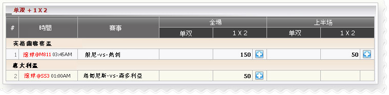

單雙 + 1 X 2
定義:
查看代理贏輸根據占成注單投注種類之單雙/ 1x2/ 上半場或全場.

單雙 + 1 X 2
- 以英格蘭聯賽盃，member01 投注於 波恩利-vs-托特納姆熱刺以下細節:
- 第一注單:金額 = 300, 賠率 = 3.13, 選擇 = 1x2 ,全場, 代理占成 = 50% ---> 代理占成 = 300*50% =
150
- 第二注單:金額 = 100, 賠率 = 2.5, 選擇 = 1x2 ,全場, 代理占成 = 50% ---> 代理占成 = 100*50% =
50
- 以意大利盃，member01 投注於烏迪內斯-vs- 桑普多利亞以下細節:
- 第一注單:金額 = 100, 賠率 = 2.3, 選擇 = 1x2 ,全場, 代理占成 = 50% ---> 代理占成 = 100*50% =
50